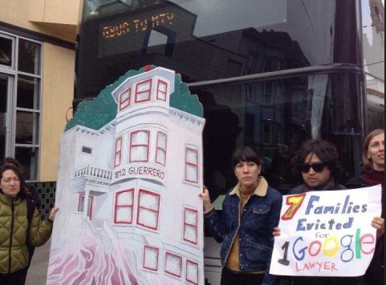
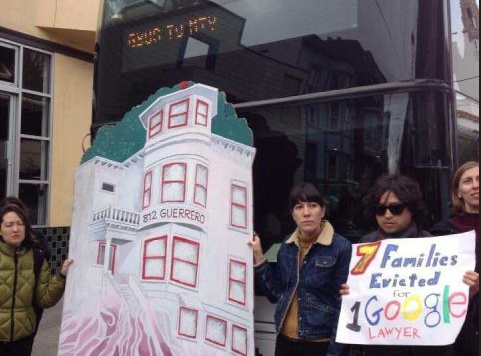

Gentrification is thought to be something that has been a more recent plague in San Francisco. However, that is not the case. Displacement and gentrification have a long and complex history in San Francisco, often rooting from overlapping socioeconomic, racial and political reasons. What the Mission District fears today is what previous cycles of residents from the Western Addition District have felt long before. To visualize historical gentrification with contemporary practices, the map below shows evictions that occurred in 1999 (represented by white dots) is being compared with the evictions in 2011 (represented by black dots). Collectively, this series of evictions is spatially juxtaposed to the Google Bus stops. The year 1999 was chosen for two reasons. Foremost, the economy was doing very well as the tech boom materialized, thus more people had financial means to move to more expensive and tech-oriented areas, like San Francisco. Secondly, and notably more speculative, the rise of the new millennium may have encouraged some to make bigger moves. With economic and early/mid-life crisis rooted in the new year/millennium, the residential demand of San Francisco escalated to a point that had made it financially unlivable for many current residents. 2011 was chosen as it was a couple of years after the Google Buses program was implemented. This accounts for the lag time between the initiation of this program and people gathering and accessing the means to move. Additionally, this lag time also allocates for financial recovery from the 2008 recession, increasing the ability for people to move. Moreover, the Google Bus stops are indicated by the blue circles and the main roadways have been emphasized to help give a sense of direction. Google Buses were implemented around 2008. Google sought to have a more sustainable means of transportation for their employees. Although seemingly environmentally conscious with less private vehicles and less road congestion, Google Buses are not without some benefit. However, their societal and communal impacts of the Google Buses and their relation to evictions is also detrimental.
  The two images above show the different sides of the Google Buses. On the right, there are people who use this bus for work. On the left, there are people who are protesting them. Although it is important to know what is happening to people, it is equally important to know how this effects both sides of the story.
 The two images above show the different sides of the Google Buses. On the right, there are people who use this bus for work. On the left, there are people who are protesting them. Although it is important to know what is happening to people, it is equally important to know how this effects both sides of the story. When looking at the amount of each coloured dot for 1999 and 2011, it may come to a surprise that 1999's evictions exceed 2011's drastically. This aspect is very important to think about: why was there more displacement in a great economy than in a recovering economy? What are the social, political, racial and economic factors that all had a hand in the 1999 displacement?
Spatial proximity is another important factor to consider in this map. While the 1999 white dots seem more scattered, the 2011 black dots have higher concentrations near the Google Bus blue circle dots. This may imply that the evictions in 2011 were influenced heavily by Google's employees and where their proximity would be relative to these stops. It could also be argued that the 1999 evictions are still fairly clustered near Google Bus stops. Again, speculatively, this may be because those who moved in had tech-related jobs and stayed in the workforce and in their residencies. Therefore, it also makes sense to place the Google Bus stops near where current employees work. Many of the Google Bus stops are along Market's transit areas and, more notably, the upper-class north side of San Francisco. The mere clustered placement of these bus stops adds to the imaginability of the economic dichotomy of San Francisco.
The story of displacement has been told over and over by Rebecca Solnit, and it has been lived and relived by various residents of San Francisco. The front-running Creative Class does bring a series of economic, sustainable, aesthetic, social and innovative ideas into a city, but what about the authentic culture of a city that grew with the people? Is that history to be forgone over a subjective definition of “better”? It is not to say that these two groups cannot live by each other, but when the Creative Class holds an economic and a spatial hegemony over minorities, that is when problematic displacement occurs. The success of some people is bringing problems to other people. Many of these Creative Class members are even blind to those being displaced. It is this sort of dialogue that needs to occur between all of the city’s inhabitants, new and old. This map sought to qualitatively and quantitately show the amount of displacement that has happened on the streets of our home: San Francisco. Although the amount of 2011 displacement dots look comparatively less, there the amount of displacements continued to grow. More evictions related to the Google Buses can be found here. Maps help to visualize the severity and abundance of this epidemic. But overall, it is imperative that this dialogue takes place between various communities, especially to those who may experience gentrification or potential gentrifiers.
Notes can be found at the bottom of the page. Please make sure your cursor is not in the map's frame when you are scrolling downwards.